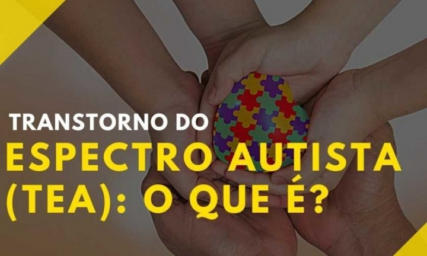
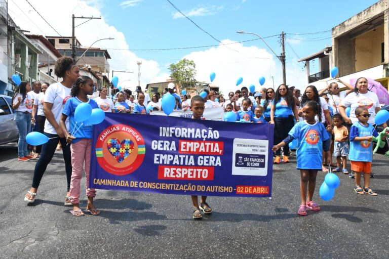

Dia do Orgulho Autista: Celebrando a Neurodiversidade
No dia 18 de junho, celebramos o Dia Mundial do Orgulho Autista. Esta data, estabelecida em 2005 pela organização "Aspies for Freedom", nasceu da necessidade de valorizar a neurodiversidade e reconhecer as habilidades e talentos únicos das pessoas no espectro autista, rejeitando a visão de que o autismo é uma condição a ser "curada".
O Transtorno do Espectro Autista (TEA) é uma condição neurológica complexa e diversa, afetando a comunicação, interação social e comportamento de formas variadas. Cada pessoa no espectro possui características e talentos únicos, o que reforça a importância de celebrar a diversidade autista.
Neste site, você mergulhará no universo do autismo sob uma perspectiva de aceitação e empoderamento. Conheça a história do movimento, desmistifique equívocos comuns, encontre recursos valiosos e junte-se à luta por uma sociedade mais inclusiva e respeitosa, onde todos tenham igualdade de oportunidades e sejam valorizados por suas contribuições únicas.
Galeria de Conscientização e Inclusão
Imagens que inspiram e educam sobre a beleza da neurodiversidade.
Entenda o Autismo
Aprenda sobre o Transtorno do Espectro Autista (TEA), suas características e a diversidade dentro do espectro.
Saiba MaisA Luta pela Neurodiversidade
Conheça a origem do Dia do Orgulho Autista e os marcos do movimento da neurodiversidade no Brasil e no mundo.
Descubra a História